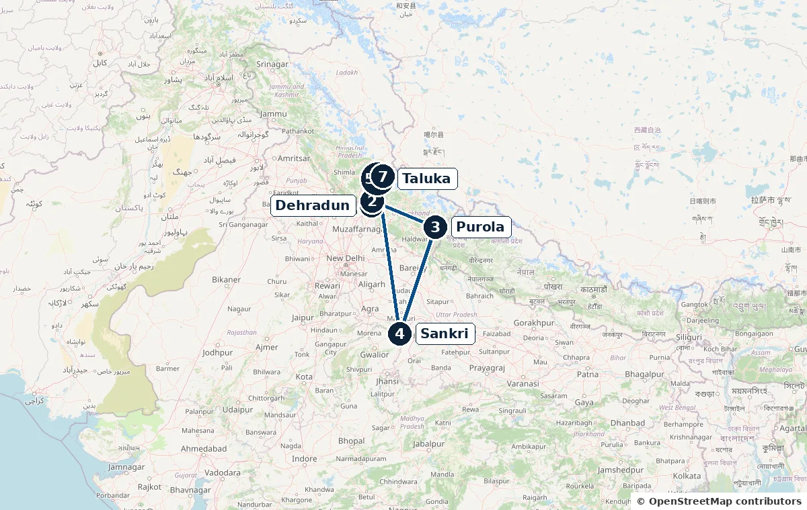
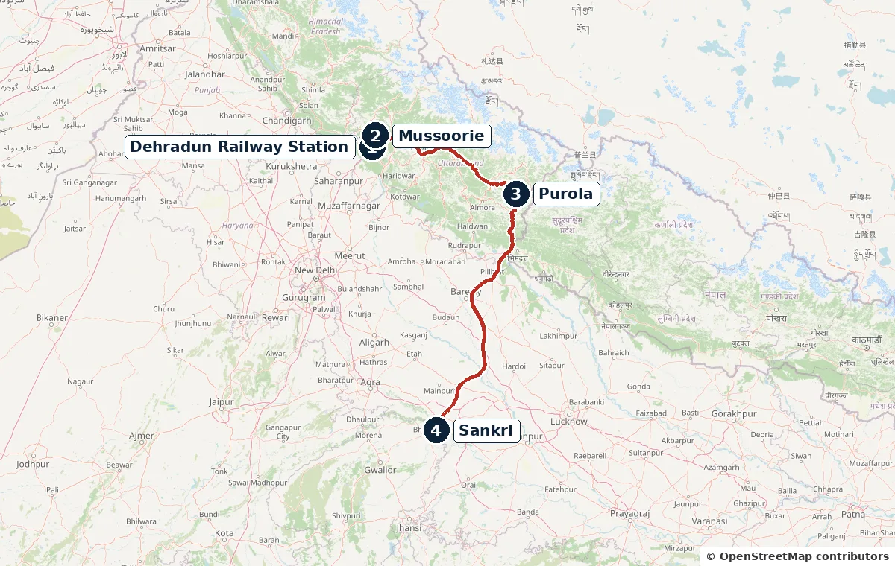
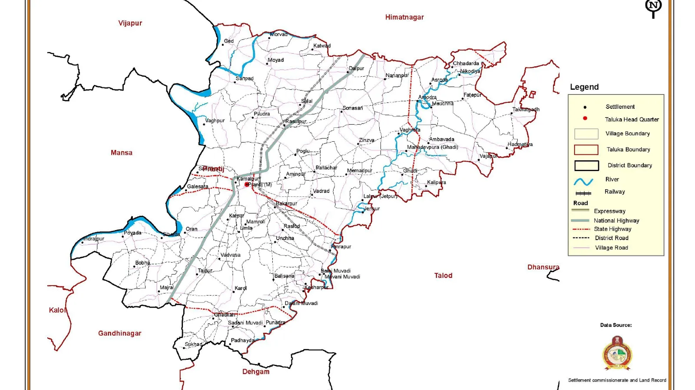
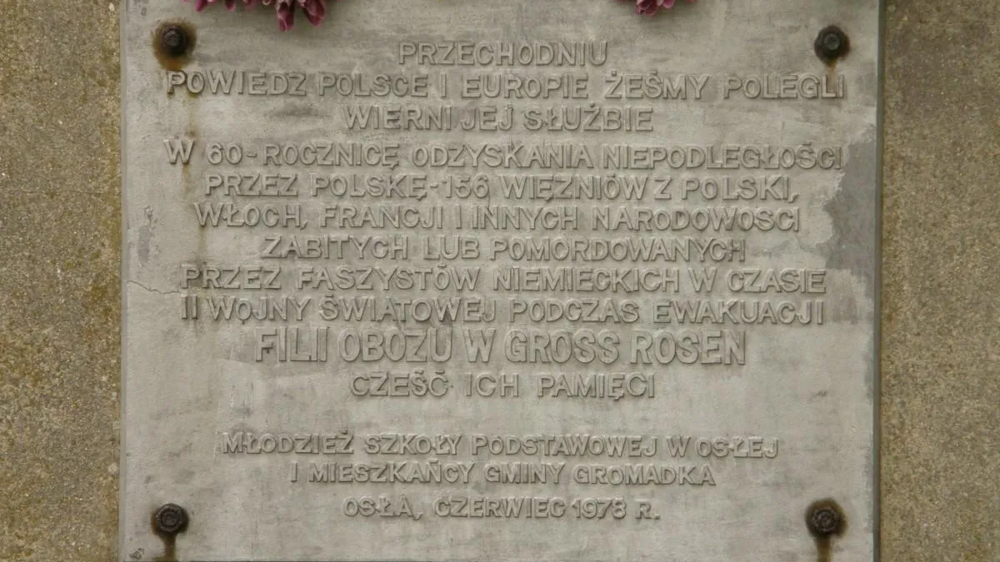
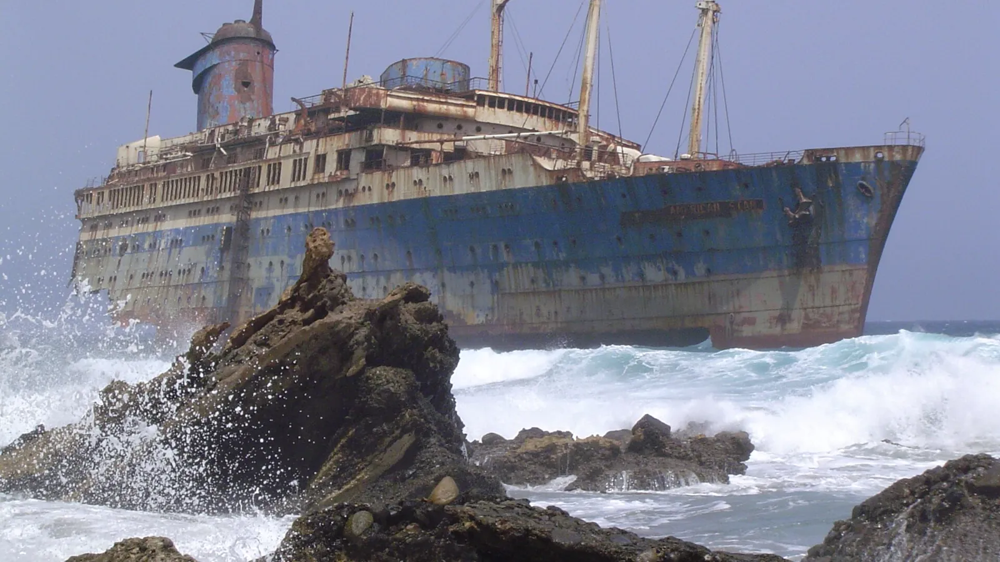
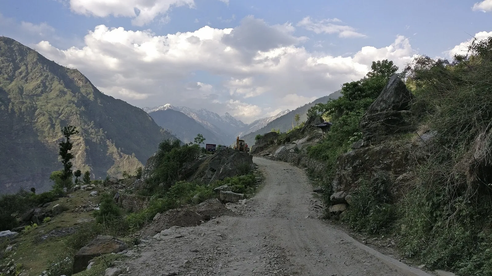

Har Ki Dun is one of the gentlest high-Himalayan treks in India and one of the most beautiful. From the road head at Sankri you walk up the Supin River through walnut, pine and cedar, past the old wooden village of Osla, to a broad meadow facing Swargarohini, the 'stairway to heaven' of the Mahabharata. A professional trek leader, cook and support team look after the camps, and all meals are vegetarian. It suits fit first-time trekkers aged about 12 and up.
Trip highlights
- Views of Swargarohini, Black Peak (Kalanag) and Bandarpoonch
- Osla village, with its carved wooden houses and the Someshwar temple
- Meadows, pine, cedar and Himalayan birch forest along the Supin River
- The Har Ki Dun valley, linked in legend to the Pandavas' last journey
- Marinda Tal, a quiet lake below the peaks
- Two nights in Sankri, a village with views of the Swargarohini range
Your week at a glance
- Day 1Dehradun to Sankri along the YamunaTransfer day
- Day 2Taluka and the walk along the Supin RiverTrek day
- Day 3Osla village and the climb to KalkatiyadharTrek day
- Day 4Har Ki Dun valley and Marinda TalSummit day
- Day 5Down through Osla to Puani GaratTrek day
- Day 6Back to Taluka and SankriTrek day
- Day 7Sankri back to DehradunDeparture

Route: Dehradun » Mussoorie » Purola » Sankri » Taluka » Osla » Har Ki Dun
Day-by-day itinerary
Dehradun to Sankri along the Yamuna

- About 190 km, 8 to 9 hours
- Sankri about 1,950 m
- Pick-up 07:30
07:30 · Prince Chowk, near Dehradun railway station be on time
Meet your trek team
Shared or private jeep with your trek leader.
Morning
Up through Mussoorie and down to the Yamuna
Tea stop at Kempty or Damta, then along the river through Naugaon.
Afternoon
Purola and the pine forests to Sankri
The last stretch climbs through deodar and pine.
CAREHill roads in Uttarakhand can close for hours after rain or landslides. Leave a buffer day before any onward train or flight.
Evening
Sankri village
Briefing from your trek leader and a kit check.
Dinner Included · Vegetarian, at the guesthouse

Today's route
- Dehradun Railway Station
- Mussoorieabout 31 km by road
- Purolaabout 399 km by road
- Sankriabout 542 km by road
Taluka and the walk along the Supin River

- Jeep 12 km, about 1 hour
- Trek about 10 km, 5 to 6 hours
- Camp about 2,500 m
About 08:00
Jeep to Taluka
A rough forest road, about an hour.
Morning
Trek along the Supin River
A gently rising trail under walnut, pine and cedar, with stream crossings and Gangad village across the river.
WEARProper trekking shoes with ankle support, not sports shoes. Carry a rain jacket every day.
Afternoon
Puani Garat campsite
A quiet camp beside the river.
Lunch and dinner Included · Packed lunch on the trail, hot dinner at camp
On the mapTalukaPuani Garat
Osla village and the climb to Kalkatiyadhar

- Trek about 10 km, 5 to 6 hours
- Camp about 3,300 m
Morning
Climb to Osla
Terraced fields of red amaranth and barley below an old wooden village.
WEAROsla's Someshwar temple and homes are private and sacred. Ask before photographing people, and do not enter the temple without permission.
Afternoon
Kalkatiyadhar meadow camp
Rest and acclimatise.
All meals Included · Vegetarian
On the mapOslaKalkatiyadhar
Har Ki Dun valley and Marinda Tal

- Trek about 17 km, 7 to 8 hours
- Har Ki Dun about 3,560 m
- Start about 07:00
About 07:00
Through meadows and birch forest
The valley opens out with Har Ki Dun peak ahead.
Late morning
Har Ki Dun meadow
The confluence of streams below Swargarohini and Black Peak. Time for photographs and a packed lunch.
Midday
Marinda Tal
A small lake further up the valley, when conditions allow.
Afternoon
Return to Kalkatiyadhar
The same trail back.
All meals Included · Vegetarian
On the mapHar Ki DunMarinda Tal
Down through Osla to Puani Garat

- Trek about 10 km, 4 hours
- Camp about 2,500 m
Morning
Descent via Osla
Easier walking with valley views.
Afternoon
Free at camp
A slow afternoon by the river.
All meals Included · Vegetarian
On the mapOslaPuani Garat
Back to Taluka and Sankri

- Trek about 10 km, 4 to 5 hours
- Jeep about 1 hour
Morning
Last walk along the river
An easy descent to the road head at Taluka.
Afternoon
Jeep to Sankri
Hot showers at the guesthouse.
Dinner Included · Vegetarian, at the guesthouse
Sankri back to Dehradun

- About 190 km, 8 to 9 hours
- Arrive about 17:00 to 18:00
After breakfast
Drive to Dehradun
The same road back via Purola and Mussoorie.
TIMEBook onward trains or flights for after 20:00, or the next day.
On the mapSankriDehradun Railway Station
Where you stay
Guesthouse in Sankri and tented camps on the trek
Good-quality dome or A-frame tents, clean sleeping bags and foam mattresses, with kitchen, dining and toilet tents. A trek leader, cook and support staff travel with you, and mules carry the camp.
What's included
- Dehradun to Dehradun road transfers, including the Sankri to Taluka jeep both ways
- 2 nights in Sankri and 4 nights in tented camps
- All vegetarian meals on the trek
- Professional trek leader, cook and support staff
- Mules for camping equipment
- First-aid kit with oximeter and oxygen
- Forest entry fees for Indian nationals
- 24/7 support from Blue Diamond Voyage
Not included
- Porter or mule for personal bags (available on request)
- Forest fees for foreign nationals
- Travel and trek insurance
- Tips, laundry, phone calls and personal medicines
- Costs from bad weather, landslides, road blocks or evacuation
Visa, entry and phones
| Permit | What it is | Who | Cost |
|---|---|---|---|
| Photo ID | Aadhaar, passport, driving licence or voter ID for flights, trains and hotel check-in | Indian citizens | — |
| Indian e-Visa | Tourist e-Visa applied online before travel | Foreign nationals (not OCI holders) | Varies by nationality |
| Monument tickets | Most ASI monuments sell tickets online and by UPI at the gate | Everyone | About INR 20 to 50 for Indians, more for foreigners |
- Carry the original photo ID, not a photocopy. Security at airports and many temples checks it.
- Phone and internet: Jio and Airtel work best across most of this route. Download offline Google Maps before hill or forest stretches, where signal drops.
NOTEWhen you book, we arrange the paperwork with you and share every document on your trip's WhatsApp group before departure.
Good to know
Packing for the trek
Trekking shoes with ankle support, a warm down jacket, thermals, a rain jacket, cap, gloves, a 30 to 40 litre daypack, two water bottles, sunscreen and a head torch. Nights are cold even in June.
Leave no trace
Carry all plastic back down. The valley is part of Govind Wildlife Sanctuary, and camping in the Har Ki Dun meadow itself is not allowed.
UPI, cards and cash
UPI works almost everywhere, even at small stalls. Keep some cash in INR 100 and 200 notes for temples, parking, tips and places where the network is weak.
Temple and shrine etiquette
Cover shoulders and knees. Remove shoes where asked, and carry socks for hot stone floors. Leather belts and bags are not allowed inside some Jain and Hindu temples. Ask before photographing people and inside shrines.
Water and street food
Drink sealed bottled or filtered water only. Choose busy stalls where food is cooked in front of you, and skip cut fruit and ice from roadside stalls.
Driving times
Indian roads are slower than the kilometres suggest: plan on 40 to 50 km an hour on highways and much less in hills and towns. Your driver's breaks and meal stops are built into the timings.
Plugs and tipping
Plugs are Indian three-pin and two-pin, 230 volts. Tipping drivers and guides about INR 300 to 500 a day is appreciated.
In an emergency
All emergencies (India) 112 (police 100, ambulance 108)
Tourist helpline 1363 (Ministry of Tourism, 24 hours, multilingual)
Blue Diamond Voyage 24/7 +91 98242 21400 and +91 97148 59797
Best time to go
April to June for rhododendrons and long days; September to November for the clearest views after the monsoon. Avoid July and August (landslides). In December to March the upper trail is under snow and only experienced winter trekkers should go.
| April to June | Best | Days about 15° to 20°, nights near freezing at Kalkatiyadhar. Rhododendrons in April. |
| September to November | Best | Crisp and clear, nights below freezing from late October. |
| July to August | Avoid | Monsoon rain and landslides on the road to Sankri. |
| December to March | Winter only | Snow from Osla upwards. |
Frequently asked questions
How fit do I need to be for Har Ki Dun?
You should be able to walk 5 to 7 hours a day with a light daypack. Start walking or climbing stairs daily for a month before the trek. Children from about 12 can do it with a parent.
Is the food vegetarian?
Yes, all meals on this trek are vegetarian. Tell us if you need Jain food: the cook can leave out onion, garlic and potato with notice.
Will my phone work?
Signal is weak in Sankri and there is none on most of the trail. Tell your family you will be out of reach for four days.
What about altitude sickness?
The highest point is about 3,560 m. The climb is gradual, but headaches can happen. Your trek leader checks oxygen levels every evening and will bring you down if needed.
Can this itinerary be changed for our dates and pace?
Yes. Every Blue Diamond Voyage itinerary is a starting point. We change the number of nights, the hotels, the pace and the activities to suit your family, and send you a personalised quote.
Photo and map credits
- Day 1: Superfast1111, CC BY-SA 3.0, via Wikimedia Commons
- Day 2: REVENUE DEPARTMENT, GUJARAT, CC0, via Wikimedia Commons
- Day 3: vorwerk, CC BY-SA 3.0, via Wikimedia Commons
- Day 4: Wollex, CC BY-SA 3.0, via Wikimedia Commons
- Day 5: vorwerk, CC BY-SA 3.0, via Wikimedia Commons
- Day 6: REVENUE DEPARTMENT, GUJARAT, CC0, via Wikimedia Commons
- Day 7: Pathaharapathik, CC BY-SA 4.0, via Wikimedia Commons
- Maps: © OpenStreetMap contributors; road routes by OSRM. Distances are by road; drive times on this page allow for local traffic.
Make this journey yours
Every Blue Diamond Voyage itinerary is a starting point. Tell us your dates, your city and how you like to travel, and we shape the hotels, the pace and the food around you. Timings and local details were checked on November 2026 and are reconfirmed for your dates when you book.